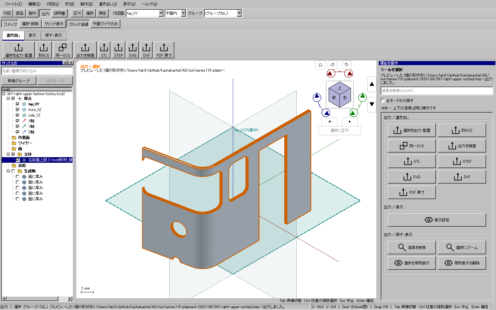

限定実装の関連回帰を確認済み。全体・配布版ゲート前であり、公開更新6には今回の変更を含めていない。車体全体の製作モデルや実工作の完了報告ではない。
保存済みの曲面に沿う0.1 mm板5枚を実際のUIで選ぶと、右側だけ「結合後の体積が入力と矛盾します」となった。左側の同じ操作は成功していた。失敗入力・操作・画面を保全した。
入力5個とnativeの結合結果は有効な閉ソリッドだった。既存の体積積分では各形の最初の頂点を別々の基準点にしており、微小な継ぎ目誤差を含む形の比較で規約が混在していた。入力の和と結果の差は約4.7843e−5 mm³。同じ積分式で共通の局所点を使った独立診断では約1.54e−11 mm³となった。
非公開のオフセット曲面の積分へ任意の基準点を渡せるようにし、Booleanの入力と結果に同じ局所点を使う。他の呼出しの既定動作、形状、穴、元データ、許容差、体積整合の判定値、連結性・閉鎖性・法線・自己交差の検査、公開APIと保存形式は変えていない。
| 確認 | 結果 |
|---|---|
| 修正前の追加回帰 | 失敗。既存18件は成功 |
| 修正後のコア | 19件成功。5層・逆順・回転・(1000, −2000, 3000) mmへの移動、従来の足す/引く/交差、拒否条件と元native保持 |
| 関連UI | HP-BO 5件成功。選択・下見・取消・再開・確定・保存経路 |
| 実UI367 | 保存済みの実部品5枚を結合、保存、Undo/Redo、独立KCD2/STEPに成功 |

さらに遠い(100000, −200000, 300000) mm条件は、体積比較の後で品質検査が停止した。独立診断370では入力の薄板自体も自己交差検査が停止する。局所へ移す診断だけでは全例を解決できなかった。最初の失敗を削除せず、実用位置での結合修正と遠方配置の品質検査を区別する。任意の座標で解決したという主張はしない。
裾の分割は実UI364/365で停止した。独立診断368では共通基準点でも体積差約6.0704e−5 mm³が残る。こちらは別件として調査し、判定値を広げて通さない。
証拠はout/series115-plaboard-20261105/の366（初回の前後試験）、371（修正後19件）、boolean-reference-related-ui-20261109/、actual-boolean-reference-right-five-ply-20261109/、370/370b、368。回帰用の曲面1枚はtests_v2/fixtures/trimmed-curved-ply-source.kshapeに収録した。診断で生成した形状のCADへの読み戻しは行っていない。